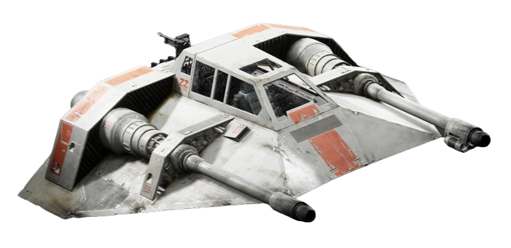
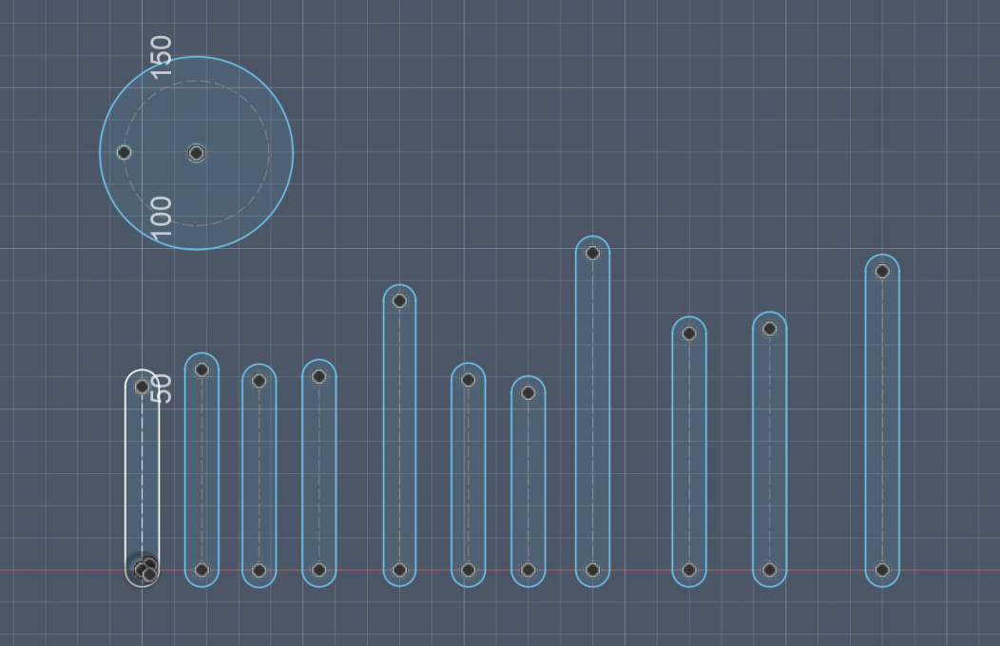
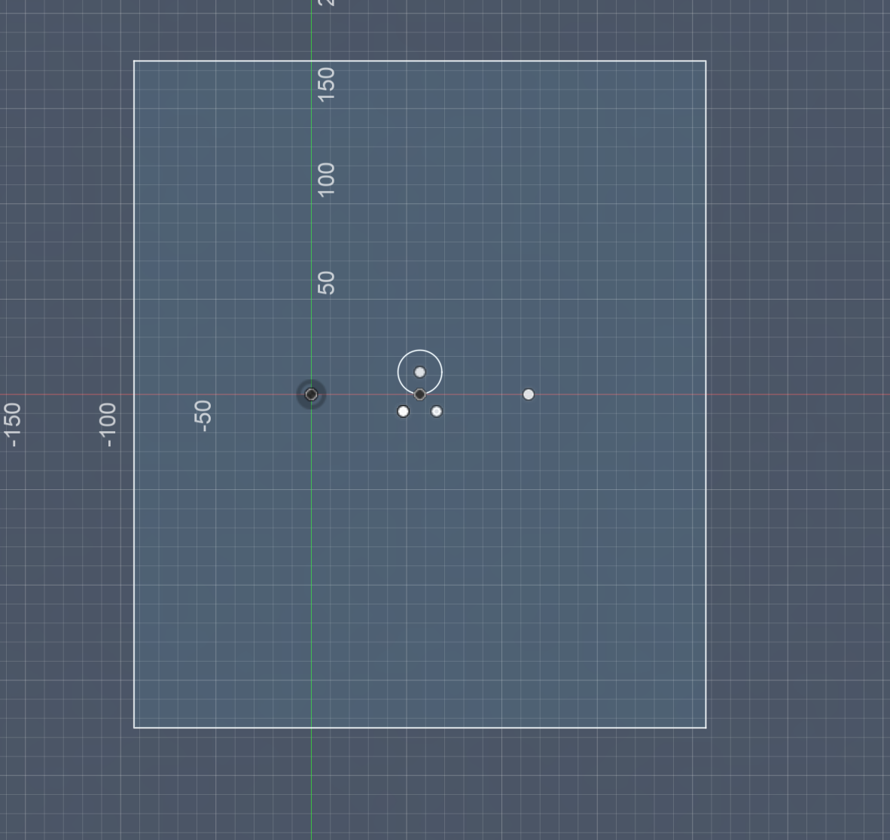
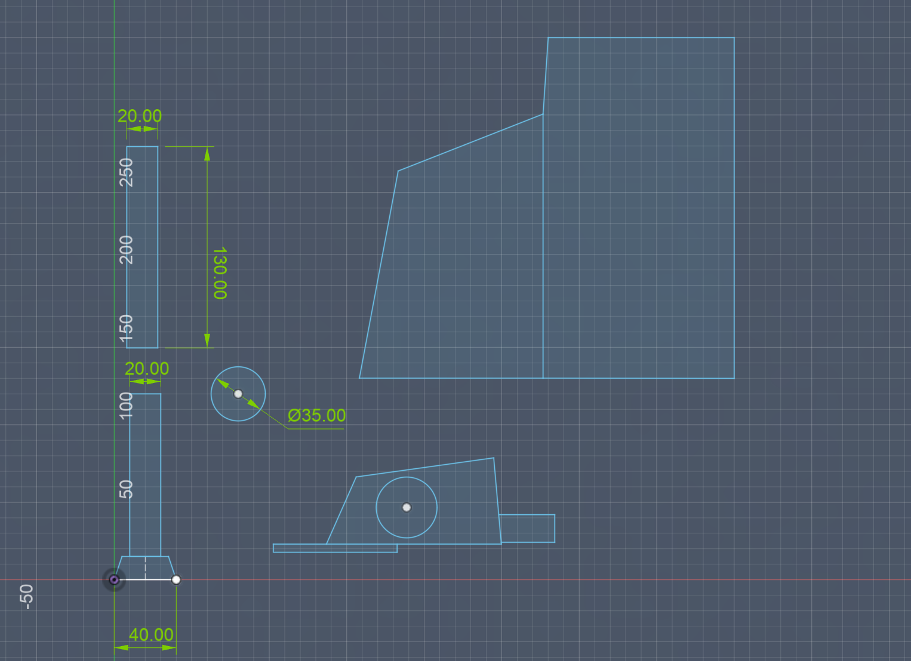

I wanted to make a kinetic sculpture that used many linkages to help me visualize the processes that might go into building my final project. I ended up making a Jansen Linkage to simulate walking motion.
Bobby recommended that I research the Strandbeest and the Jansen Linkage, a famous mechanism that creates a smooth walking motion. I researched the build parameters to create this and thought about how to translate the motion into my sculpture. I watched a lot of videos of how ATATs walk and the Jansen linkage was pretty close.
I used CAD to model all the linkage components and laser cut them from cardboard. I used wooden sticks for my joints and laser cut cardboard caps to keep them from slipping out.
Build Steps:



This week's assignment was really fun to make. I enjoyed thinking about how to make the linkages move and how to mount it to a board.